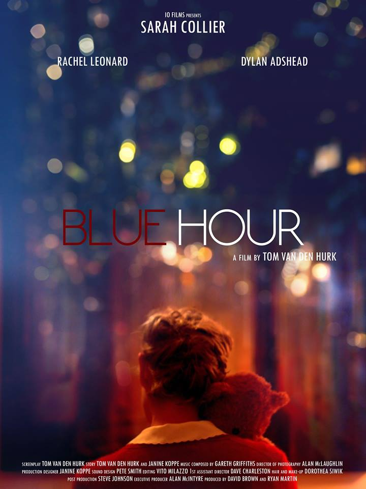

Gareth Griffiths is a BAFTA winning composer and sound designer. He makes music for film, TV, theatre, dance and sound based installations. He is interested in composing scores that blur the line between music and sound while supporting and deeply enhancing the accompanying media.
Music and sound design for book trailer showing on 4OD for Jesse Burton's best seller The Miniaturist.
Produced by Forest of Black and Directed by Michael Sherrington.
Blue Hour
Short film full score.

Salt
Score composed for film poem Salt. Film by Anne Milne and Poem by Sofie Cooke. The film, about the history of the Clyde and the Commonwealth, is to premier on the Tall Ship beside the Riverside Museum as part of the Glasgow Commonwealth Games cultural festival.
Video to come.
Pigeon
Music composed for Pigeon, a co-production between Lyra (Edinburgh, Scotland) and Kopergietery (Gent, Belgium).
A colaborative theatre piece involving 8 young people from Belgium and Scotland which explores what it’s like to be lost and find your way home. It is an ambitious work that involves projection video mapping and a combination of live sound and precomposed musical score.
Directed by Jo Timmins and Dominique Collet.
Funded by Creative Scotland in conjunction with Creative Europe.
My Silent World
Music composed for My Silent World, shown on Channel 4.
'Overwhelmed by the hostility of the city, a man seeks solace in a world of silence and dance.'
Directed by Luke Aherne and choreography by Mark Smith.
Hell Unlimited
Commission with Kim Moore to co-compose and perform an original score for Helen Biggar and Norman McLaren’s 1936 anti-war propaganda film ‘Hell Unlimited’. The score was realised with a combination of live instruments, analog synthesizers and sampled material. The project culminated in a live performance to picture in the Glasgow Film Theatre. Further performances included the Bo'ness Hippodrome (Scotland's oldest cinema) and SWG3 along side Primal Scream, Jon Giorno, Sparrow in the Workshop and Kevin Williamson.
Just A Door
Contributed compositions/software patch "Just A Door" to the ‘Open Doors’ Installation project by Lithuania artist Julijonas Urbonas on display at ZKM (Centre for media and art) in Karlsruhe, Germany. The project uses sensors, attached to the doors of a number of public buildings, to analyse the angle and speed of movement of each door.
"Just A Door" is written with Max/MSP programming language and uses this information to manipulate, via a method of granular synthesis, specifically tuned viola samples that are played through speakers mounted on the door. The door then becomes an abstract yet performable instrument.
Music composed for contemporary dance worked with choreographer Lucy Boyes. The work was created in residence at Dancebase, Edinburgh.
Just A String Circle
Compositional research into into minimalism, microtonal beating and sound spatialisation.
The piece was composed for 8 channel surround sound with the audience seated in the centre of a circle of speakers. Entirely based on a small set of specifically tuned viola samples (using the principles of just Intonation), the piece explores Reich like repetitive staccato phrases that move apart from each other both temporally and spatially. This develops further as spatialisation of the individually note of the phrases comes into play. The patterns gradually dissolve through a means of granular synthesis into long drone notes reminiscent of the work of La Monte Young and Phil Niblock. The circa 20 minute piece aims to creative mediative like state where the audience can focus on evolving rhythmical relationships, space and the fundamental details of the sounds such as the beating patterns created by specially tunes frequencies and tambral variation.